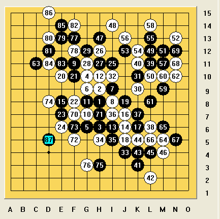
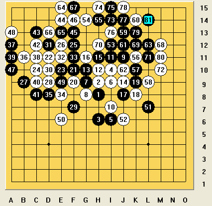

这次比赛发挥的不是很好，能取得第二名的成绩，运气占很大成分。第一轮，对王鹏，瑞星，我执白，选择12手H10，13手J8，这个是我比较喜欢的局面。15手有点意外，16最强，17这个交换并不好，19手后，白应该就可以胜了，20手活三。黑只能挡下，22手E7后，觉得这个是必胜型，对手最强应对也只有F10，24单挡后必胜，25手看似很强，但是26活三就可以抓禁手。这盘比较满意。
第二轮，对洪士光，疏星，对手执黑，10手我选择变招，11手不错的应对，12必须，15手最好的应对。16手只能很委屈的下里面，不然总有一边会留漏洞。17，黑猥琐的下法。这样白确实什么都没有了，23手，有点意外，这样白可以很舒服的下24位置，25比较直接的应对，26手，这是这盘最为满意的一手，黑进攻受到牵制，27控制下法，28强行进攻，29必须，30手这里我并不认为白能必胜，只是觉得很难防。31手意外，之后32跳三强行抓禁手。黑以为可以形成反，其实没有用，36后获胜。

第4轮，对黄圣明，我执白。这盘下的最郁闷，明知道22这里是有区别，当时着魔了，居然还这么去下。22手这个下法，白棋后面很被动，一直想借着自己的攻击去防守，正常交换32，对方33出现失误，34没有细算，觉得角太小，只想去把这个交换防住，这也是暴露了自己的弱点，以后还是要注意计算。这盘的失利也让后面的棋更难下了。

［ 暮雨迟 于 2012-6-27 18:41:40 时花20金币送鲜花一朵］
［ 于 2012-6-27 20:37:09 时奖励此帖[金币加 100 威望加1］
［ 于 2012-6-27 20:37:26 时花20金币送鲜花一朵］
［ 于 2012-6-27 20:37:26 时花20金币送鲜花一朵］
［ 于 2012-6-27 20:37:26 时花20金币送鲜花一朵］
［ 于 2012-6-27 20:37:26 时花20金币送鲜花一朵］
［ 于 2012-6-27 20:37:26 时花20金币送鲜花一朵］
［ 秋风雾语 于 2012-6-28 12:19:20 时花20金币送鲜花一朵］
［ 秋风雾语 于 2012-6-28 12:19:20 时花20金币送鲜花一朵］
［ 秋风雾语 于 2012-6-28 12:19:20 时花20金币送鲜花一朵］
［ 秋风雾语 于 2012-6-28 12:19:20 时花20金币送鲜花一朵］
［ 秋风雾语 于 2012-6-28 12:19:20 时花20金币送鲜花一朵］
［ 炫飞冰弦 于 2012-6-28 17:52:48 时花20金币送鲜花一朵］
［ 炫飞冰弦 于 2012-6-28 17:52:48 时花20金币送鲜花一朵］
［ 炫飞冰弦 于 2012-6-28 17:52:48 时花20金币送鲜花一朵］
［ 炫飞冰弦 于 2012-6-28 17:52:48 时花20金币送鲜花一朵］
［ 炫飞冰弦 于 2012-6-28 17:52:48 时花20金币送鲜花一朵］
 这次比赛最郁闷的两件事 第一件就是对王鹏用骗反被搞死了 第二件就是没能死在高天师手上一回
这次比赛最郁闷的两件事 第一件就是对王鹏用骗反被搞死了 第二件就是没能死在高天师手上一回引用：
原文由 小丸.net 发表于 2012-6-27 21:18:58 :
被天师搞死，是我们的荣幸。。。。我可没那么幸运。。。。最牛的就是去年全国赛被梅凡搞死一回，被龚胜搞死一回，还被张进宇搞死一回。。。。。满足了。。。。
 要争取搞死他们
要争取搞死他们
 你们在求各种搞死。。。。
你们在求各种搞死。。。。搞实验，。，平时输入棋谱我是真累啊，一个一个的点进去
现在好了。可以强制复制进去鸟，。。感谢叔叔